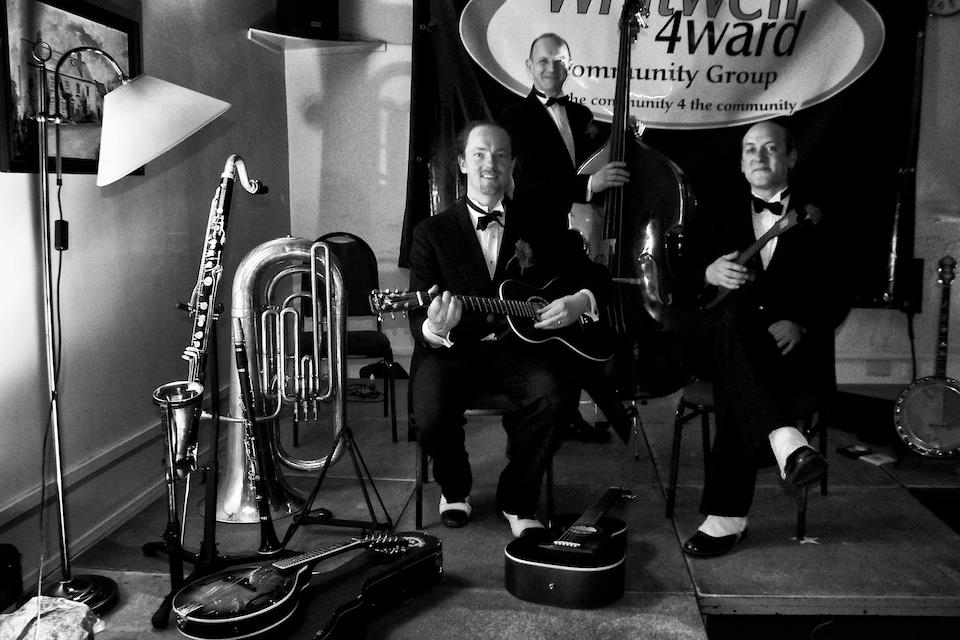
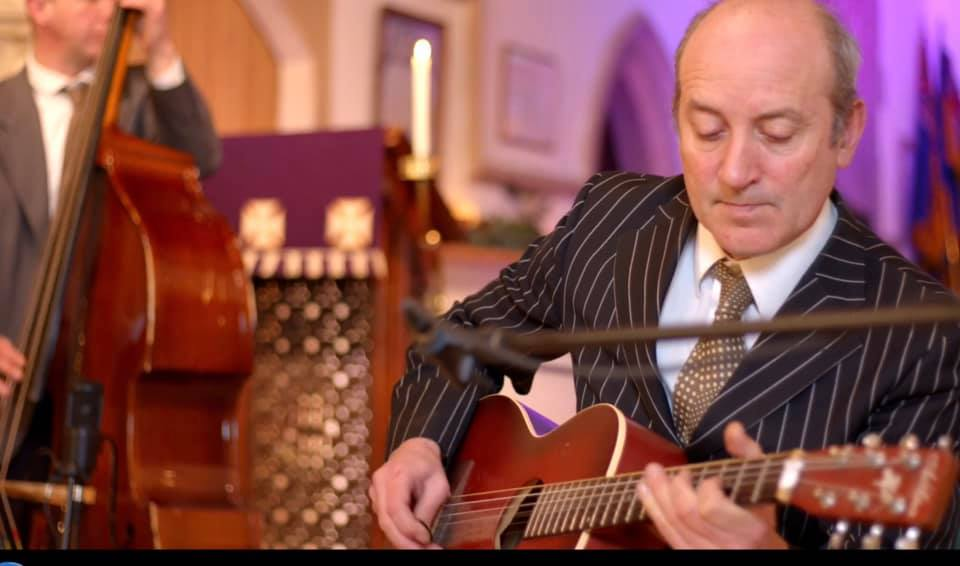

We are a group of talented musicians who share a passion for jazz music. Our band has been performing for almost 20 years and we have played at many prestigious venues and events. We love to entertain and we always bring our best to every performance.
Tom was born in 1971 and spent his childhood in Buxton. He started Ukulele as soon as his fingers were big enough, inspired by his Grandfather, and turned to Banjo at the age of 10. At 14 he was appearing with the Hot Spa Stompers, and soon after with Ged Hones Dixie Boys. It was Ged who encouraged Spats to start guitar. He moved to the Cotswolds in 1992 to join the Charleston Chasers (where he first met and worked with Malcolm Sked). Since then he has worked as a professional musician, travelled the four corners of the globe, and has been lucky to play with many great artists and bands. This includes The Pasadena Roof Orchestra, The Temperance Seven, Monty Sunshine, Acker Bilk, Marty Grosz, Bob Bernhard, Bob Wilber, Kenny Davern, Scott Black, Howard Aldon, Bucky Pizarelli, Duncan Swift, Nevile Dickie, The Hot Antic Jazz Band, The Swedish Jazz Kings, The Picadilly Dance Orchestra, The Palm Court Orchestra, The Rio Trio, Sammy Rimmington, The Solid Senders, Chris Barbers Band, Tommy Burtons Sporting House Strings, The Oxford Classic Jazz Band and Bob Kerr's Whoopee Band to name but a few. As well as working with the Hot Combination and Hot Fingers, Spats currently works regularly with Martin Litton (see the CD Lollipops), Keith Nichols (in many varied combinations), The Pasadena Roof Orchestra (on guitar, banjo and vocals), and Martin Wheatley (with the Wheatley's Arcadians) alongside varied free-lance work.
Malcom started the Euphonium at school, and joined the local brass band when he was 13. At 16 he joined the Charleston Chasers playing Tuba, and later Sousaphone, and stayed with the band for 15 years! In 2000 he joined Bob Kerr's Whoopee Band and has toured extensively around Europe. In 2005 Malcolm decided to introduce Double Bass to his repertoire, and Hot Fingers was formed. As well as working with Hot Fingers and the Hot Combination Malcolm works freelance for a wide variety of bands and musicians of all styles and sizes, including Keith Nichols, the Pasadena Roof Orchestra and Martin Litton, as well as continuing with Bob Kerr's Whoopee Band. To quote Spats, “Malc's not a bad player but he talks too much.”
Danny went to Spats for jazz guitar lessons in 2004, having previously played finger-style folk guitar and mandolin. Many rare 78's and cups of tea later, Hot Fingers was formed, and they played their first gig two weeks later. In 2007 he took up the Clarinet (known affectionately as the misery stick) and later fell in love with the Bass Clarinet. In between gigs Danny works as an acupuncturist and herbalist in Cheltenham. Hot Fingers formed because Danny wanted to learn jazz guitar, Spats wanted to increase his lead guitar, and Malcolm wanted to learn Double bass. The band worked as a unit instantly, and has gone from strength to strength over the following years. The boys live within a few miles from each other in Villages in the North Cotswolds
Emily is a regular addition to Hot Fingers. She began singing during her school years and continued through to post-graduate training at Trinity College of Music. As well as her classical work (including leading roles in Carmen and the Beggars Opera) she has toured three times with Gifford's Circus, singing, acting and performing with a Cossack Equestrian Act! She has adapted her classical background to the darker styles of jazz, and although influenced by such greats as Peggy Lee, Ella Fitzgerald and Lee Wiley, Emily has found her own unique style and voice.